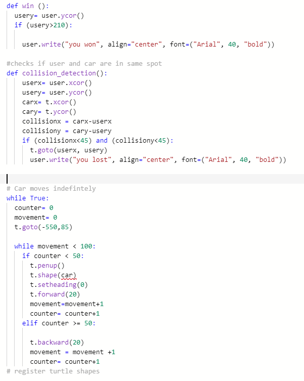
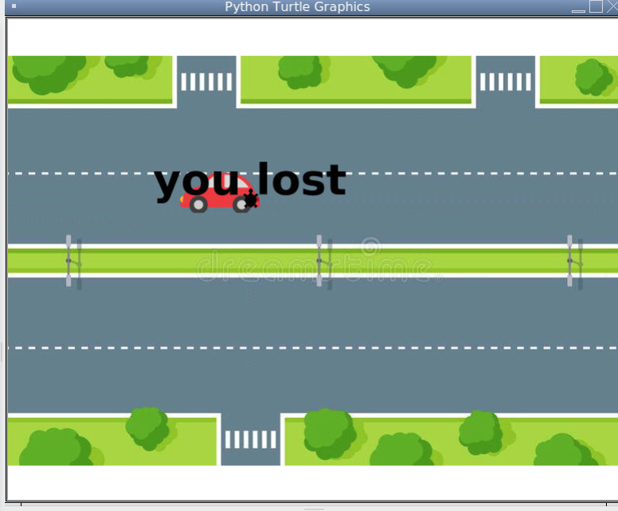
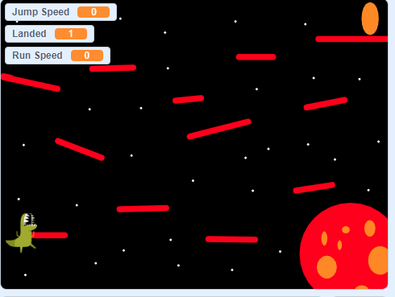

Home
Portfolio
About Me
This is my Portfolio Page!
Project One: PLTW 1.1.9 Python Iteration and Movement.


This is a python feelings simulation. It asks for an input of your feeling and then displays the feeling. The picture above is the output when the user says they are feeling embarrassed. We used if and while loops to make the code. Something I struggled with was trying to include movement which I eventually did by adding gifs which moved across the screen. I also struggled with this project because my computer did not really work so I had to do a lot of work at home. Something that was easy for me was finding angles and sizes for drawing because I am good at math. Overall I liked this project because it allowed me to express myself.
Project Two: PLTW 1.2.5 Python .


This is a python interpretation of Crossy Road. You use the up, down, left, right to control the user turtle. When the turtle hits the car the game ends and displays "you lost" when you get past the car the game ends with "you won". Something I struggled with was the collision function. The way I coded this was I had the computer find when the x and y were exactly the same. I liked this project because I could actually play it!
Project Three: Scratch Game.

This project is our interpretation of Doodle Jump. We used events, functions, changing costumes and backgrounds. I liked to do this project because block coding is easier to understand .
Black Jack game written in Python.
Modified bits in pictures.
Use data files to create graphs.
Using netlogo do remix of illusions.
Interactive Fiction Rags to Riches.